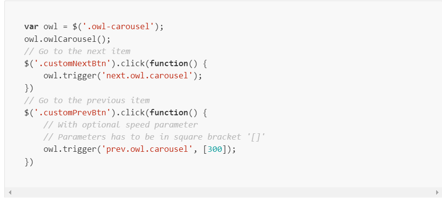

- Welcome
- Installation
- FAQ
- Options
- Classes
- Events
- Built-in Plugins
- Plugin API
- Sass Styles
- External Libs
- Contributing
- Changelog
- Contact
Getting Started
Owl Carousel supports plugin modular structure. This means that you can remove plugins
that you won’t use or create new ones that fit your needs
Plugins included
Following javascript files are concatenated in distributed owl.carousel.js and owl.carousel.min.js version.
If you are looking for individual scripts please visit Github and fork/download the source project
You could also trigger events by yourself to control Owl Carousel:
Callbacks
Instead of attaching an event handler you can also just add a callback to the options of Owl Carousel.
Each event passes very useful information within the event object . Based on the example above:
Carousel/p>
initialize.owl.carousel
Type: attachable
Default: onInitialize
When the plugin initializes.